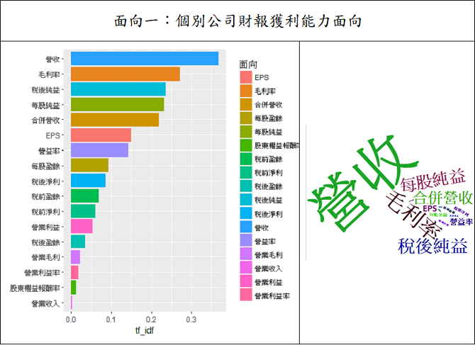
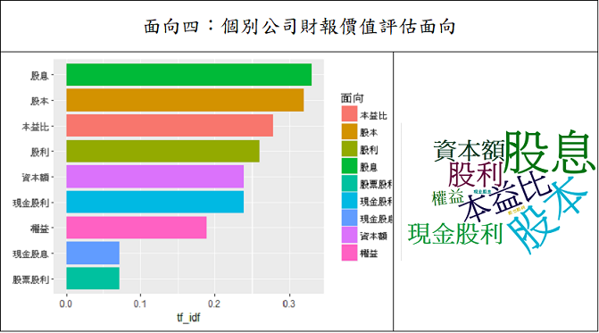
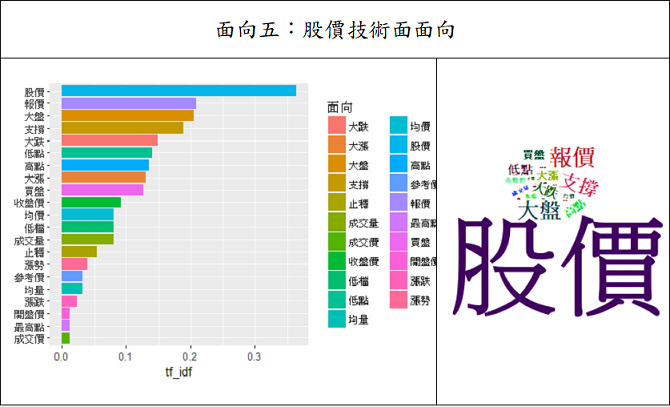
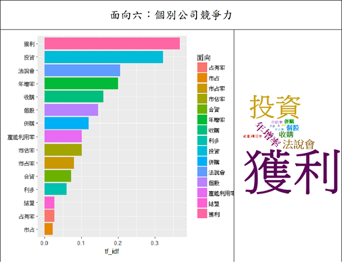
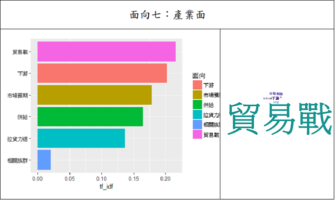
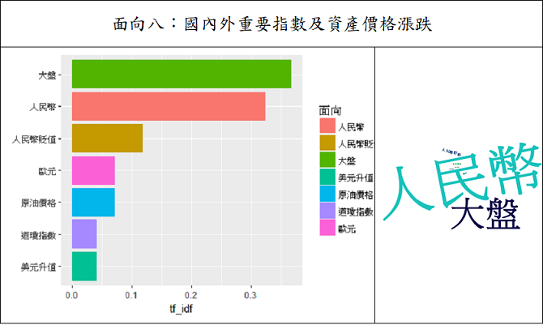
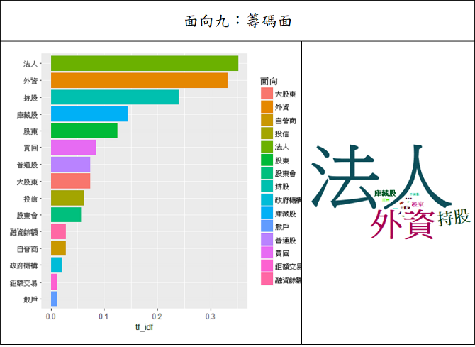

DATA feature
Chapter 1
九大面向詞分析與作圖
Read More
Chapter 2
正負情緒詞分析與作圖
Read More
Chapter 3
單一股票分析與作圖
Read More
Chapter 4
股票與面向詞分析作圖
Read More
Introduction
將新聞資料以視覺化方式
結合九大面向做描述性統計，以利先行了解資料的特性。
以下我們以新聞資料中最近期的一個月－2018年10月的新聞舉例分析。
利用TF-IDF列出頻率由高至低的相關詞，及利用文字雲呈現，
使投資者能更迅速瞭解新聞相關特性
Back
Chapter 1－九大面向詞分析與作圖
新聞中的財經詞分為九個面向
分析新聞中重要的面向詞
以面向詞出現頻率來了解其重要性
面向一：
個別公司財報面向－獲利能力
2018年10月

CLOSE
面向二：
個別公司財報面向－安全性評估
2018年10月
此段期間的新聞中，並未提及對於安全性評估的面向詞
CLOSE
面向三：
個別公司財報面向－成長力分析
2018年10月
此段期間的新聞中，並未提及對於成長力分析面向詞
CLOSE
面向四：
個別公司財報面向－價值評估
2018年10月

CLOSE
面向五：
股價面向－技術面
2018年10月

CLOSE
面向六：
個別公司競爭力
2018年10月

CLOSE
面向七：
產業面
2018年10月

CLOSE
面向八：
國內外重要指數及資產價格漲跌
2018年10月

CLOSE
面向九：
籌碼面
2018年10月

CLOSE
Back
Chapter 2－提到前三名面向的新聞裡面有出現的正負情緒詞
本主題的分析為：
1. 取得在Chapter 1中每個面向前三名的面向詞
2. 擷取特定區間的新聞資料，並取出包含前三名面向詞的新聞
3. 將取得的新聞導入情緒字典，找出有提及的正負情緒詞，依提及頻率排前十名
Back
Chapter 3－最常出現的股票
本主題的分析為：
根據指定期間的新聞，找出新聞內容中提到的股票並排序。
Back
Chapter 4－有提到前三名股票的新聞，新聞內容提到的面向詞
本主題的分析為：
1. 取得在Chapter 3中前三大的股票
2. 擷取特定區間的新聞資料，並取出包含前三名股票的新聞
3. 將取得的新聞找出有提及的面向詞，依提及頻率排序
Back
回首頁